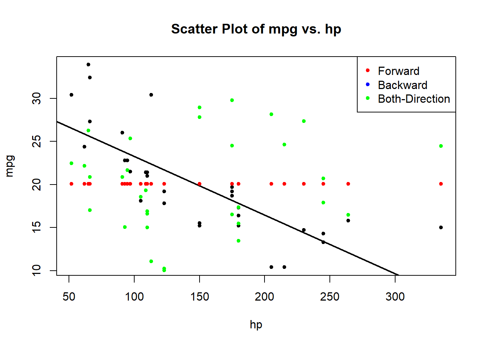
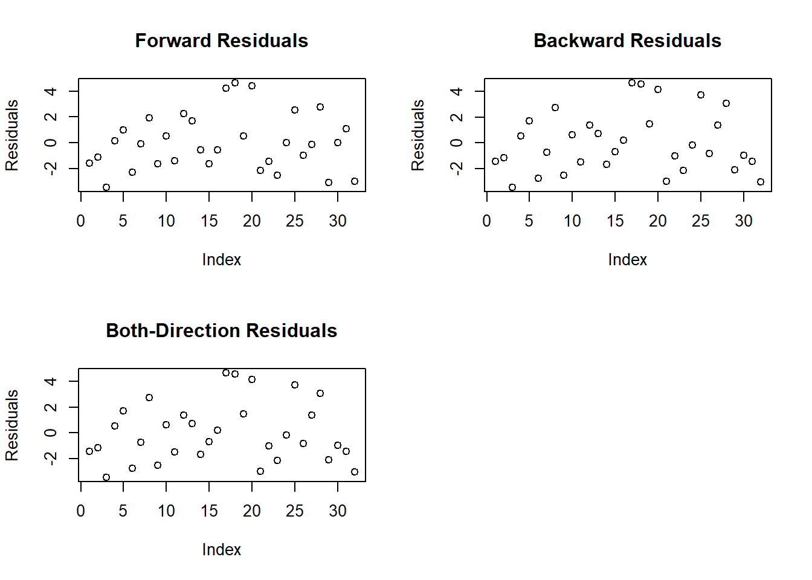

Stepwise regression is a powerful technique used to build predictive models by iteratively adding or removing variables based on statistical criteria. In R, this can be achieved using functions like step() or manually with forward and backward selection.
Example
Forward Stepwise Regression:
# Initialize an empty modelforward_model <-lm(mpg ~ ., data = mtcars)# Forward stepwise regressionforward_model <-step(forward_model, direction ="forward", scope =formula(~ .))
Start: AIC=70.9
mpg ~ cyl + disp + hp + drat + wt + qsec + vs + am + gear + carb
In simple terms, we start with a model containing no predictors (mpg ~ 1) and iteratively add the most statistically significant variables until no improvement is observed.
Backward Stepwise Regression:
# Initialize a model with all predictorsbackward_model <-lm(mpg ~ ., data = mtcars)# Backward stepwise regressionbackward_model <-step(backward_model, direction ="backward")
Here, we begin with a model including all predictors and iteratively remove the least statistically significant variables until the model no longer improves.
Both-Direction Stepwise Regression:
# Initialize a model with all predictorsboth_model <-lm(mpg ~ ., data = mtcars)# Both-direction stepwise regressionboth_model <-step(both_model, direction ="both")
In both-direction regression, the algorithm combines both forward and backward steps, optimizing the model by adding significant variables and removing insignificant ones.
Visualizing Data and Model Fit:
Now, let’s visualize the data and model fit using base R plots.
# Scatter plot of mpg vs. hpplot(mtcars$hp, mtcars$mpg, main ="Scatter Plot of mpg vs. hp", xlab ="hp", ylab ="mpg", pch =20 )abline(lm(mpg ~ hp, data = mtcars), col ="black", lwd =2)points(sort(mtcars$hp), forward_model$fitted.values, col ="red", pch =20)points(sort(mtcars$hp), backward_model$fitted.values, col ="blue", pch =20)points(sort(mtcars$hp), both_model$fitted.values, col ="green", pch =20)legend("topright", legend =c("Forward", "Backward", "Both-Direction"), col =c("red", "blue", "green"), pch =20)

This plot displays the scatter plot of mpg against hp with fitted lines for each stepwise regression. The colors correspond to the models created earlier.
Visualizing Residuals:
# Residual plots for each modelpar(mfrow =c(2, 2))# Forward stepwise regression residualsplot(forward_model$residuals, main ="Forward Residuals", ylab ="Residuals")# Backward stepwise regression residualsplot(backward_model$residuals, main ="Backward Residuals", ylab ="Residuals")# Both-direction stepwise regression residualsplot(both_model$residuals, main ="Both-Direction Residuals", ylab ="Residuals")

These plots help assess how well the models fit the data by examining the residuals.
Conclusion
Stepwise regression is a valuable tool, but it’s crucial to interpret results cautiously and be aware of potential pitfalls.